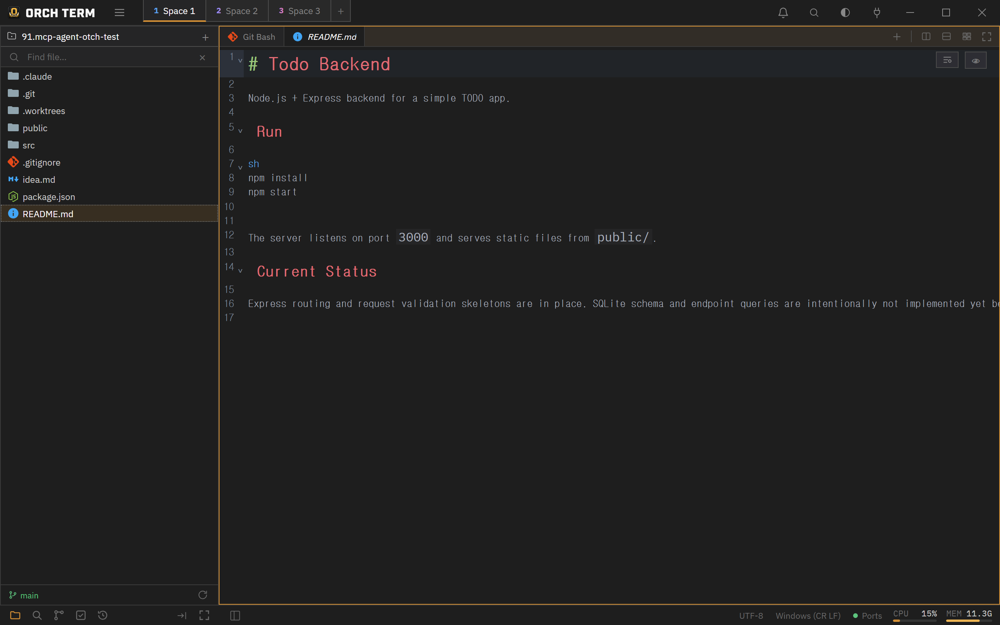
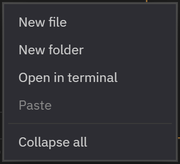

Core features · Explorer
Explorer
The file explorer on the left. Switch between several project roots in one window, navigate the tree with the keyboard alone, and handle files with inline create, rename, and drag & drop.
Switch between multiple projects
Clicking the project name in the Explorer header opens a dropdown to switch between the registered project roots. The + button adds a new root. The list and the active root are saved and restored on restart.

Keyboard navigation · multi-select
Work the entire tree without a mouse. Move between items with the arrow keys, and just type letters to jump to an item whose name matches (type-ahead). You can multi-select several items and open them at once as preview tabs.
exp…) to jump to a matching name.| Key | Action |
|---|---|
| ↑ / ↓ | Move between tree items |
| Enter | Select · open the item |
| Esc | Close dropdown / search |
| Type a letter | Type-ahead — jump to a matching name |
File search — type in the search bar and it finds files by partial filename match not just in the current folder but across all subfolders. Heavy folders like node_modules·.git·target·dist are excluded by default.
Inline create · rename
Create a file or folder right at the selected spot, and rename in place. When creating, if you enter a nested path all at once like src/utils/new.ts, the missing folders are created along with it.
utils/new.ts in the input row and it creates the missing folders too.Start a rename on an item and you edit it in place. Open tabs stay in sync too, so renames and deletes are reflected directly.
Drag & drop — insert path
Drop a file or folder onto a terminal pane and that item's absolute path is inserted at the cursor, with the pane highlighted while you drop. Dragging with "attach as context" does the same thing but inserts the project-relative path.
Left · right placement toggle
The / buttons in the Explorer footer move the Explorer left ↔ right across the screen. The position is saved and restored on restart.
Collapse/expand is on the status bar — opening/closing the Explorer is done not from the header but from the always-visible button on the left of the bottom status bar. Whether it's collapsed and its width are preserved per Space and restored across restarts.
Right-click empty space → open a terminal
Right-click a folder or empty space in the Explorer and Open in terminal appears. On a folder, a new terminal opens in that folder; on empty space, in the project root. The same menu also has cut · copy · paste · duplicate, reveal in Explorer, copy path, and collapse all.

Open with the system app — binary/non-text files open in the OS default app, and you can also open the OS file explorer with that file selected.